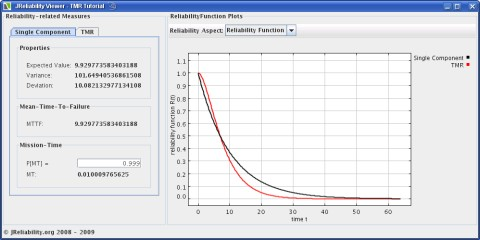
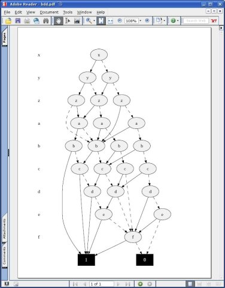

Features
Easy and Safe Modeling
JReliability features an easy modeling of the system as Boolean Functions represented as mathematical terms. Transparent for the user and, thus, hiding complexity, JReliability uses Binary Decision Diagrams (BDDs) as an intermediate format to directly transform the user-built terms into a reliability function of the overall system. Since 2017, JBDD is the supported BDD back-end. As an alternative to BDDs, JReliability now also offers the use of a stochastic logic-based success/fault-tree analysis that delivers decent approximative results in case BDDs outgrow the available memory.
Powerful Analyzis
With JReliability, a set of powerful and fast analyzers is delivered that are able to automatically determine common reliability-related measures like Mean-Time-To-Failure (MTTF), Mission-Time (MT), failure rates and many more from a given system model. Besides overall reliability-related measures, JReliability also has a rich set of importance measures available that judge the importance of individual components for coherent and non-coherent systems. Lots of analytical evaluation methods are included with the number of included evaluators steadily growing. For the modeling of the system component's properties, a large set of predefined common reliability functions are available. Of course, user defined reliability functions can be seamlessly included.

Demonstrative Visualization
The framework contains a GUI for the visualization of the measures as well as a function to plot the terms and, if needed, also to plot the BDDs respresenting system structure using dot.

Open Source and Development
The library is open source and released under the LGPL license allowing the integration into scientific, educational, and commercial projects. Moreover, the development of specific solutions based on JReliability is simplified by the usage of Java features like Generics. The library code is pure Java and free of any text-based configuration files or boilerplate code.